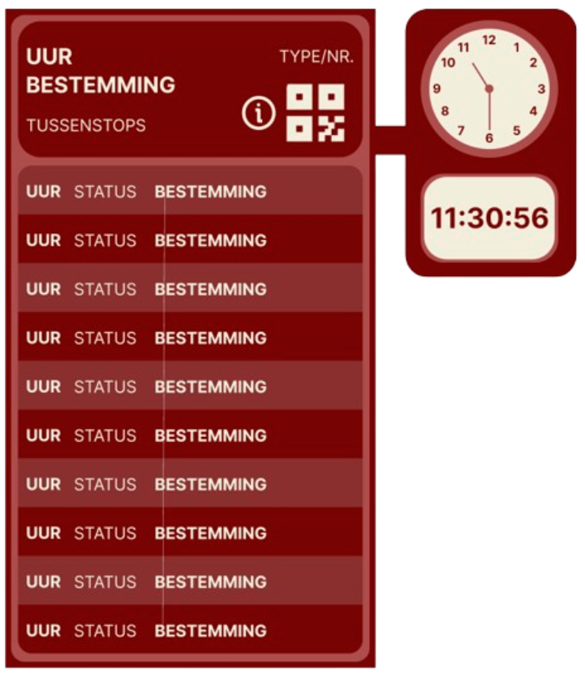
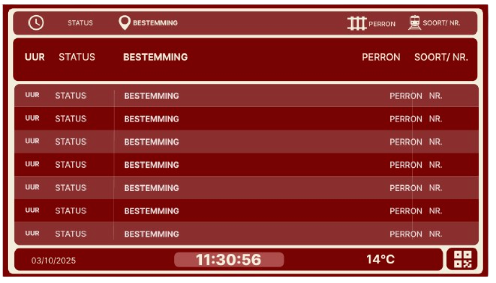
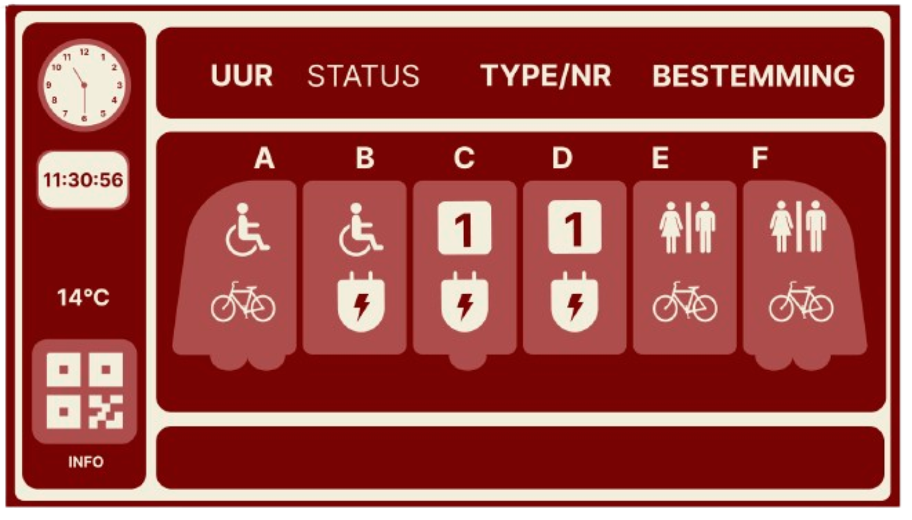
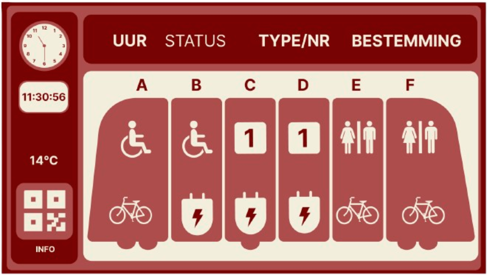

In week 3 werd het concept van midi- en high-fidelity prototypes besproken. We werkten van eenvoudige low-fidelity schetsen toe naar meer uitgewerkte digitale prototypes.
Ik zette mijn schetsen om in eerste digitale prototypes in Figma, waarbij ik aandacht besteedde aan gebruiksvriendelijkheid, overzicht en interactie. Ik experimenteerde met kleurgebruik en lettertypes, zodat de schermen zowel van dichtbij als op afstand goed leesbaar waren, inclusief voor mensen met verminderd zicht. Daarnaast begon ik te spelen met een frisser kleurenpalet, dat afwijkt van het standaard blauwe treinstationspalet, om een eigen identiteit te creëren.
Perronscherm

Overzichtcherm

Wagonscherm

